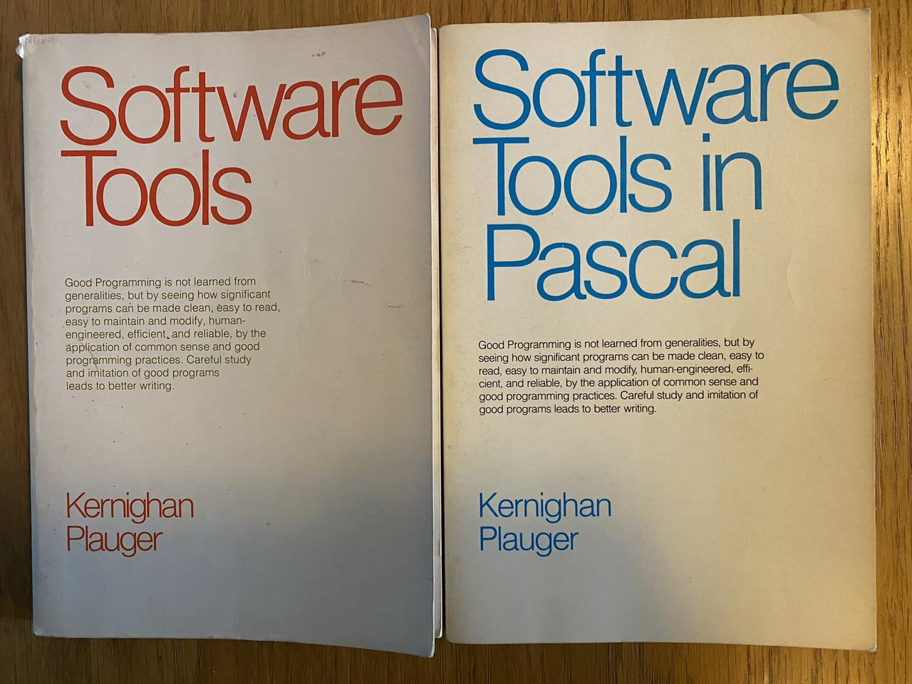

I updated the NCURSES PROGRAMMING HOWTO from
The Linux Documentation Project
slightly so the example programs would compile with modern compilers
and my pull request was accepted in January 2025, but unfortunately
the updated version has not made it online at TLDP.org. So I decided
to put it online here:
The Ada Quality and Style: Guidelines for Professional
Programmers is available on the web, but I don't think that there is
a PDF copy anywhere easily found, so I'm making a copy available
here. This is the style guide for Ada 83, by the way. I got it from
the Ada Information Clearinghouse. I downloaded the file
style-ps.zip
into a temporary directory and then ran the shell script
make-83style-pdf.sh to create the PDF file:
#! /usr/bin/env bash# First, unzip style-ps.zip. Then, in another directory, unzip all six of# those zip files. Then do the following:set-x
mkdirtmp&&cdtmp&&unzip-L../style-ps.zip&&mkdirtmp&&cdtmp&&foriin../*.zip;dounzip-L$i;done&&foriin*.ps;dops2pdf$i$(basename$i.ps).pdf;done&&qpdf--empty-pagescovers.pdf1-3--covers_fixed.pdf&&pdfunitecovers_fixed.pdfpreface.pdfack.pdftoc.pdfintro.pdfsource_c.pdfreadabil.pdfprog_str.pdfprog_pra.pdfconcurr.pdfportabil.pdfreuse.pdfperforma.pdfcomplete.pdfappendix.pdfref.pdfbib_0188.pdfindex.pdf83style.pdf
Note the qpdf command? That pulls out the first three pages
of covers.pdf, because the other pages duplicate stuff that is in
the other .pdf files.
Then I read through the PDF and made a bookmarks file for use with
jpdfbookmarks (I use one of the releases from this github repo):
Ada Quality and Style/1
Cover 1/1
Cover 2/2
Preface/4
Authors and Acknowledgements/6
Contents/8
Chapter 1: Introduction/10
1.1 How to use this book/11
1.2 To the new Ada programmer/11
1.3 To the experienced Ada programmer/12
1.4 To the software project manager/12
1.5 to contracting agencies and standards organizations/13
Chapter 2: Source Code Presentation/14
2.1 Code formatting/14
2.1.1 Horizontal spacing/14
2.1.2 Indentation/15
2.1.3 Alignment of operators/18
2.1.4 Alignment of declarations/19
2.1.5 More on alignmeent/20
2.1.6 Blank lines/21
2.1.7 Pagination/22
2.1.8 Number of statements per line/23
2.1.9 Source code line length/24
2.2 Summary/24
Chapter 3: Readability/26
3.1 Spelling/26
3.1.1 Use of underscores/26
3.1.2 Numbers/26
3.1.3 Capitalization/27
3.1.4 Abbreviations/28
3.2 Naming conventions/29
3.2.1 Names/29
3.2.2 Type names/29
3.2.3 Object names/30
3.2.4 Program unit names/31
3.2.5 Constants and named numbers/32
3.3 Comments/33
3.3.1 General comments/34
3.3.2 File headers/35
3.3.3 Program unit specification header/35
3.3.4 Program unit body header/38
3.3.5 Data comments/39
3.3.6 Statement comments/41
3.3.7 Marker comments/43
3.4 Using types/44
3.4.1 Declaring types/44
3.4.2 Enumeration types/45
3.5 Summary/46
Chapter 4: Program Structure/50
4.1 High level structure/50
4.1.1 Separate compilation capabilities/50
4.1.2 Subprograms/51
4.1.3 Functions/52
4.1.4 Packages/53
4.1.5 Cohesion/53
4.1.6 Data coupling/54
4.1.7 Tasks/54
4.2 Visibility/55
4.2.1 Minimization of interfaces/55
4.2.2 Nested packages/56
4.2.3 Restricting visibility/56
4.2.4 Hiding tasks/57
4.3 Exceptions/59
4.3.1 Using exceptions to help define an abstraction/59
4.4 Summary/61
Chapter 5: Programming Practices/64
5.1 Optional parts of the syntax/64
5.1.1 Loop names/64
5.1.2 Block names/65
5.1.3 Exit statements/66
5.1.4 Naming end statemnts/66
5.2 Parameter lists/67
5.2.1 Formal parameters/67
5.2.2 Named association/67
5.2.33 Default parameters/68
5.2.4 Mode indication/69
5.3 Types/69
5.3.1 Derived types and subtypes/69
5.3.2 Anonymous types/71
5.3.3 Private types/71
5.4 Data structures/72
5.4.1 Heeterogeneous data/72
5.4.2 Nested records/73
5.4.3 Dynamic data/74
5.5 Expressions/75
5.5.1 Range values/75
5.5.2 Array attributes/76
5.5.3 Parenthetical expressions/76
5.5.4 Positive forms of logic/77
5.5.5 Short circuit forms of the logical operators/77
5.5.6 Accuracy of operations with real operands/78
5.6 Statements/78
5.6.1 Nesting/78
5.6.2 Slices/80
5.6.3 Case statements/80
5.6.4 Loops/81
5.6.5 Exit statements/82
5.6.6 Recursion and iteration bounds/83
5.6.8 Return statements/84
5.6.9 Blocks/85
5.6.10 Aggregates/86
5.7 Visibility/86
5.7.1 The use clause/87
5.7.2 The renames clause/88
5.7.3 Overloaded subprograms/88
5.7.4 Overloaded operators/89
5.7.5 Overloading the equality operator/89
5.8 Using exceptions/89
5.8.1 Handling versus avoiding exceptions/90
5.8.2 Handlers for others/90
5.8.3 Propagation/91
5.8.4 Localizing the causes of an exception/91
5.9 Erroneous Execution/92
5.9.1 Unchecked conversion/92
5.9.2 Unchecked deallocation/93
5.9.3 Dependeence on parameter passing mechanism/93
5.9.4 Multiple address clauses/94
5.9.5 Suppression of exception check/94
5.9.6 Initialization/94
5.9.7 Direct_IO and Sequential_IO/95
5.9.8 Incorrect order dependencies/96
5.10 Summary/96
Chapter 6: Concurrency/100
6.1 Tasking/100
6.1.1 Tasks/100
6.1.2 Anonymous task types/101
6.1.3 Dynamic tasks/102
6.1.4 Prioritis/103
6.1.5 Delay statements/104
6.2 Commmunication/105
6.2.1 Effecient task communications/105
6.2.2 Defensive task communication/106
6.2.3 Attributes 'Count, 'Callable, and 'Terminated/108
6.2.4 Shared variables/109
6.2.5 Tenative rendezvous constructs/111
6.2.6 Commmunication complexity/112
6.3 Termination/113
6.1.1 Avoiding termination/113
6.3.2 Normal termination/114
6.3.3 The abort statement/115
6.3.4 Abnormal termination/115
6.4 Summary/116
Chapter 7: Portability/118
7.1 Fundamentals/119
7.1.1 Global assumptions/119
7.1.2 Actual limits/120
7.1.3 Comments/120
7.1.4 Main subprogram/121
7.1.5 Encapsulating implementation dependencies/121
7.1.6 Implementation-added features/122
7.2 Numeric types and expressions/122
7.2.1 Predefined numeric types/122
7.2.2 Ada model/123
7.2.3 Analysis/123
7.2.4 Accuracy Constraints/124
7.2.5 Comments/124
7.2.6 Precision of constants/124
7.2.7 Subexpression evaluation/124
7.2.8 Relational tests/124
7.3 Storage control/125
7.3.1 Representation clause/125
7.4 Tasking/126
7.4.1 Task activation order/126
7.4.2 Delay statements/126
7.4.3 Package Calendar, type Duration, and System.Tick/126
7.4.4 Select statement evaluation ordr/126
7.4.5 Task scheduling algorithm/127
7.4.6 Abort/127
7.4.7 Shared variables and pragma shared/127
7.5 Exceptions/127
7.5.1 Predefined exceptions/127
7.5.2 Constraint_Error and Numeric_Error/128
7.5.3 Implementation-defined exceptions/128
7.6 Representationi clauses and implementation dependent features/128
7.6.1 Representation clauses/129
7.6.2 Package System/129
7.6.3 Machine code inserts/129
7.6.4 Interfacing Foreign Languages/130
7.6.5 Implementation-defined pragmas and attributes/130
7.6.6 Unchecked deallocation/130
7.6.7 Unchecked conversion/131
7.7 Input/output/131
7.7.1 Name and Form parameters/132
7.7.2 File closing/132
7.7.3 I/O on access types/132
7.7.4 Package Low_Level_IO/132
7.8 Summmary/133
Chapter 8: Reusability/136
8.1 Understanding and clarity/137
8.1.1 Application-independent naming/137
8.1.2 Abbreviations/138
8.1.3 Generic formal parameters/139
8.2 Robustness/139
8.2.1 Named numbers/139
8.2.2 Unconstrained arrays/140
8.2.3 Assumptions/140
8.2.4 Subtypes in generic specifications/141
8.2.5 Overloading in generic units/143
8.2.6 Hidden tasks/143
8.2.7 Exceptions/143
8.3 Adaptability/145
8.3.1 Complete functionality/145
8.3.2 Generic units/146
8.3.3 Using generic units to encapsulate algorithms/146
8.3.4 Using generic units for abstract data types/148
8.3.5 Iterators/151
8.3.6 Private and limited private types/154
8.4 Independence/156
8.4.1 Using generic parameters to reduce coupling/156
8.4.2 Coupling due to pragmas/157
8.4.3 Part families/158
8.4.4 Conditional compilation/158
8.4.5 Table-driven programming/159
8.5 Summary/160
Chapter 9: Performance/162
9.1 Improving exception speed/162
9.1.1 Pragma inline/162
9.1.2 Blocks/163
9.1.3 Arrays/163
9.1.4 Mod and rem operators/164
9.1.5 Constraint checking/164
9.2 Summmary/165
Chapter 10: Complete Examples/166
10.1 Menu-driven user interface/166
10.2 Line-oriented portablee dining philosophers example/174
10.3 Window-oriented portable dining philosophers example/179
Appendix A: Map from Ada Language Referencee Manual to Guidelines/188
References/194
Bibliography/198
Index/202
Right, So, I've talked about how the LBL Software Tools Virtual
Operating System organized its source files, using its archiver to
collect all the source files, etc. for a program into an archive
(sometimes with nested archives, because RECURSION IS NEAT) and then
putting the archive under revision control using the TCS commands
admin, delta, and get.
And that makes a lot of sense when what you are working on is one
program or another closely related collection of information. But
what if you are working on a collection of individual or nearly
individual programs? Or what if your program is large enough that
putting all its source in a single archive runs up against size limits
in the SWTOOLS programs? Remember, they were meant to run on the 16
bit minicomputers of the day, as well as the 32 bit minicomputers that
showed up soon after the SWTOOLS VOS was written, so there is a limit
on the number of lines in a file that these can handle somewhere
between 10,000 and 15,000 lines. What do you do then?
Well, today I wrote a set of commands to make it easy to work with a
collection of source files, which each have a corresponding TCS
history file in the subdirectory [.TCS]. I decided to have
one DCL command procedure whose first parameter was the command to
execute, so the common processing could be shared instead of
duplicated between programs. But I had already written a program to
compare a current source file inn the working directory with an older
version in a TCS revision file. Hmm.
Anyway, I went on to write the tcs command as a front end
for the normal TCS commands. Here's an example from running
TCS HELP
$ tcs help
usage:
tcs [ help | -h | -help | -? ]
Output this help message.
tcs admin FILE
Initialize TCS file [.TCS]FILE from FILE.
tcs get [-oOUTFILE] [-h] [-rM.N] FILE
Get a revision of FILE from TCS file [.TCS]FILE.
-oOUTFILE writes the output to OUTFILE.
If -o is not specifed the output goes to standard output.
-h Output history information instead of a revision.
-rM.N Output revision M.N.
tcs delta FILE
Add a new version to TCS file [.TCS]FILE from FILE.
tcs outdated
List all the source files that are newer than their corresponding
TCS file in [.TCS]
tcs uncovered [FILESPEC] [IGNOREDTYPES]
List all the files in the current directory that do not have
corresponding files in [.TCS].
If FILEPSEC is specified it should be a VMS wildcard that
will be applied to the current directory for matching.
If IGNOREDTYPES is specified it should be a single file type
(without the ".") or a comma separated list of file types
to be ignored.
If one needs to specified IGNOREDTYPES but not FILESPEC just
specify an empty string for FILESPEC.
And here is the current source code of TCS.SDCL:
!> TCS.SDCL -- TCS frontend.
##############################################################################
###
### tcs [ help | -h | -help | -? ]
### tcs admin FILE
### tcs get [-ooutfile] [-h] [-rM.N] FILE
### tcs delta FILE
### tcs outdated
### tcs uncovered [FILESPEC] [IGNOREDTYPES]
###
##############################################################################
wso :== write sys$output
wse :== write sys$error
TRUE = 1 .eq. 1
FALSE = 1 .ne. 1
QUIET = %x10000000
months_jan = "01"
months_feb = "02"
months_mar = "03"
months_apr = "04"
months_may = "05"
months_jun = "06"
months_jul = "07"
months_aug = "08"
months_sep = "09"
months_oct = "10"
months_nov = "11"
months_dec = "12"
debugging = f$type (tcs_debugging) .nes. ""
verbose = FALSE
command = p1
if (command .eqs. "HELP" .or.
command .eqs. "-H" .or.
command .eqs. "-HELP" .or.
command .eqs. "-?")
{
goto usage
}
if ((command .eqs. "") .or.
.not. (command .eqs. "ADMIN" .or.
command .eqs. "GET" .or.
command .eqs. "DELTA" .or.
command .eqs. "OUTDATED" .or.
command .eqs. "UNCOVERED"))
{
wse "tcs: unrecognized TCS command: """, command, """"
exit 2
}
param_idx = 2
num_options = 0
outfile = ""
while (f$extract (0, 1, p'param_idx') .eqs. "-") {
## Remember, DCL upcases everything!
if (f$extract (0, 2, p'param_idx') .eqs. "-O") {
outfile = f$extract (2, f$length (p'param_idx'), p'param_idx')
} else {
num_options = num_options + 1
options_'num_options' = p'param_idx'
}
param_idx = param_idx + 1
}
file = p'param_idx' # Can be blank
dirname = f$search ("TCS.DIR")
if (dirname .eqs. "") { # No [.TCS] directory.
create/dir [.TCS]
}
tcsfile = "[.tcs]" + file + "-TCS" # Not used by some commands.
if (debugging) {
wso "command: ", command, " file: ", file, " tcsfile: ", tcsfile
wso "outfile: """, outfile, """"
}
if (command .eqs. "ADMIN") {
goto do_admin
} else if (command .eqs. "GET") {
goto do_get
} else if (command .eqs. "DELTA") {
goto do_delta
} else if (command .eqs. "OUTDATED") {
goto do_outdated
} else if (command .eqs. "UNCOVERED") {
goto do_uncovered
}
wso "tcs: This should be impossible, so somebody screwed up. Exiting."
exit 2 .or. QUIET
do_admin:
result = f$search (tcsfile)
if (result .nes. "") {
wse "tcs: TCS file ", tcsfile, " already exists, exiting."
exit 2
}
file = f$edit (file, "LOWERCASE")
dclcmd = "admin ""-i''file'"" ''tcsfile'"
wso "Executing ", dclcmd
define/user sys$input sys$command
'dclcmd'
exit
do_get:
if (outfile .eqs. "") {
get 'options_1' 'options_2' 'options_3' 'options_4' 'tcsfile'
} else {
get 'options_1' 'options_2' 'options_3' 'options_4' 'tcsfile' >'outfile'
}
exit
do_delta:
result = f$search (tcsfile)
if (result .eqs. "") {
wse "tcs: TCS file ", tcsfile, " does not exist, exiting."
exit 2
}
define/user sys$input sys$command
delta 'file' 'tcsfile'
exit
do_outdated:
filespec = "[.tcs]*.*-tcs"
repeat {
tcsfile = f$search (filespec)
if (tcsfile .eqs. "") break
tcsrdt = f$file (tcsfile, "RDT")
tcs_day = f$extract (00, 02, tcsrdt)
tcs_monname = f$extract (03, 03, tcsrdt)
tcs_year = f$extract (07, 04, tcsrdt)
tcs_rest = f$extract (11, 12, tcsrdt)
tcs_monnum = months_'tcs_monname'
tcs_cmpdate = tcs_year + tcs_monnum + tcs_day + tcs_rest
if (debugging .and. verbose) wso "tcs_cmpdate: ", tcs_cmpdate
dirname = f$parse (tcsfile,,, "DIRECTORY") - ".TCS]" + "]"
filename = f$parse (tcsfile,,, "NAME")
filetype = f$parse (tcsfile,,, "TYPE") - "-TCS"
srcfile = filename + filetype
srcrdt = f$file (srcfile, "RDT")
src_day = f$extract (00, 02, srcrdt)
src_monname = f$extract (03, 03, srcrdt)
src_year = f$extract (07, 04, srcrdt)
src_rest = f$extract (11, 12, srcrdt)
src_monnum = months_'src_monname'
src_cmpdate = src_year + src_monnum + src_day + src_rest
if (debugging .and. verbose) wso "src_cmpdate: ", src_cmpdate
if (src_cmpdate .gts. tcs_cmpdate) wso srcfile, " is newer than ", tcsfile
}
exit
do_uncovered:
i = param_idx + 1
ignoredtypes = p'i'
if (ignoredtypes .nes. "") ignoredtypes = "," + ignoredtypes
if (debugging) wse "ignoredtypes: ", ignoredtypes
ignoredtypes_len = f$length (ignoredtypes)
if (file .eqs. "") filespec = "*.*"
else filespec = file
if (debugging) wse "filespec: ", filespec
old_result = ""
repeat {
result = f$search (filespec, 1)
if (debugging) wso "result: ", result
# No more results
if (result .eqs. "") break
# No wildcard specified
if (result .eqs. old_result) break
old_result = result
filename = f$parse (result,,, "NAME")
filetype = f$parse (result,,, "TYPE")
file = filename + filetype
# Ignore directories
if (filetype .eqs. ".DIR") next
# Skip the ignored file types.
skip = "," + (filetype - ".")
if (debugging) wse "skip: ", skip, " ignoredtypes: ", ignoredtypes
if (f$locate (skip, ignoredtypes) .ne. ignoredtypes_len) {
if (debugging) wse "Skipping ", file
next
}
tcsfile = "[.TCS]" + file + "-TCS"
if (f$search (tcsfile) .eqs. "")
wso file, " does not have a ", tcsfile
}
exit
usage:
copy sys$input sys$output
//usage:
//tcs [ help | -h | -help | -? ]
// Output this help message.
//
//tcs admin FILE
//
// Initialize TCS file [.TCS]FILE from FILE.
//
//tcs get [-oOUTFILE] [-h] [-rM.N] FILE
//
// Get a revision of FILE from TCS file [.TCS]FILE.
//
// -oOUTFILE writes the output to OUTFILE.
// If -o is not specifed the output goes to standard output.
//
// -h Output history information instead of a revision.
//
// -rM.N Output revision M.N.
//
//tcs delta FILE
//
// Add a new version to TCS file [.TCS]FILE from FILE.
//
//tcs outdated
//
// List all the source files that are newer than their corresponding
// TCS file in [.TCS]
//
//tcs uncovered [FILESPEC] [IGNOREDTYPES]
//
// List all the files in the current directory that do not have
// corresponding files in [.TCS].
//
// If FILEPSEC is specified it should be a VMS wildcard that
// will be applied to the current directory for matching.
//
// If IGNOREDTYPES is specified it should be a single file type
// (without the ".") or a comma separated list of file types
// to be ignored.
//
// If one needs to specified IGNOREDTYPES but not FILESPEC just
// specify an empty string for FILESPEC.
exit 2 .or. QUIET
I decided to leave my tcsdiff.sdcl program separate for the
time being, since it was easy to convert to use with TCS files
in [.TCS].
I found it amusing when I recently was working on some
ratfor code soon after revising my SDCL
(Structured DCL preprocessor) and I realized that the reason that the
internal goto labels that I generate in SDCL start at 23000 because
the original ratfor command started at 23000, which was
carried over to the SWTOOLS VOS ratfor and the original
sdcl written by Sohail Aslam of the University of Colorado
at Colorado Springs, and from there to my version of SDCL.
The SWTOOLS VOS provides three shells, sh, hsh
(which adds a history mechanism), and esh (which adds
ed-style editing of the history). The release notes state
that the shells need the privileges DETACH and CMEXEC, but
under VMS 5.5-2 it turns out that they need the GRPNAM privilege
as well.
Well, it's my first program using SWTOOLS VOS this time around.
So, I finished by first program using SWTOOLS. It is a simple
directory lister, called l, that interprets all its arguments as as
file specifications to search for using normal RMS wildcards, or used
*.* if not arguments are specified. It only returns the files with
the highest version number, does not include the device, directory, or
version number in the output, and converts the filenames to lower
case. It should only be used to list files in the current directory.
I needed it because I do things like
l*.sdcl*.for|sedit's/{?+}$/ar uv src.ar $1'
and I don't want any version numbers to end up in the names of the
archive members, and so on.
Rafor is much better than Fortran 77. And Fortran has even more
footguns than C when it comes to using separately compiled functions
and subroutines, with no notices that I'd passed things with the wrong
type until I actually ran the program and got a register dump because
of an access violation.
I was not able to include things from
SYS$LIBRARY:FORSYSDEF.TLB using the Fortran INCLUDE
statement in ratfor, since it has its own include keyword , so I
separated that part of the program into its own Fortran source file.
Because that file wasn't run through ratfor I couldn't use the
standard macro definitions, like STDERR, so when I wanted to output
the filesnames, I just wrote a ratfor subroutine that would print them
and called that from the Fortran subroutine. A little clunky, but it
worked.
Annoying, the fc command (which compiles *.f files to
objects) doesn't work when run under mmk, so I had to write
a command procedure dommk that does mmk/noact/out=tmp.com
and @tmp.com to do the build. (I think this was somehow due to
having multiple levels of subprocesses: mmk's and
rc's.)
Anyway, the program ended up 48 lines of ratfor in three files and 84
lines of Fortran. The C program I started with was 170 lines (in one
file), but doesn't work with the SWTOOLS shell's notions of I/O
redirection.
Today I fixed a 41 year old bug in the SWTOOLS VOS sedit commmand!
At work part of my job is to maintain an emulated VAX/VMS 5.5-2 system
for one of our clients. I have been using the SWTOOLS Virtual
Operating System recently (Unix style
I/O redirection! And pipes!), and whenever I tried to use the sedit
command it would die with an integer overflow:
I use sed frequently on Unix, and it would be nice to have
the SWTOOLS equivalent on VAX/VMS. What could I do but set the
Wayback Machine
for 1986 and dive in!
The SWTOOLS VOS was written in Ratfor, which added structured
control structures and other niceties such as macros, include files,
and string constants to pre-1977 Fortran. I suspect that even as late
as 1986, when the version of the SWTOOLS VOS was released, lots of
installations were on machines that only *had* pre-1977 Fortran
compilers.
Here's an example of Ratfor source, from sedit.r:
# copyf - copy file name to opened file fdosubroutine copyf(name,fdo)integer name(ARB)integer fdointeger fdi,iinteger opencharacter c,namstr(MAXLINE)character getchfor(i=1;name(i)!=EOS; i=i+1) #get name into stringnamstr(i)=name(i)namstr(i)=EOSfdi=open(namstr,READ)if(fdi==ERR)call cant(namstr)while(getch(c,fdi)!= EOF)call putch(c,fdo)call close(fdi)returnend
Notice that the character variables got changed to LOGICAL*1?
That turns out to be 1 byte variable...
So, to start, I needed to run sedit in the debugger. That's easy
enough:
% cd ~tmp
% mkdir sedit
% cd sedit
/dua1/software/swtools/tmp/sedit/
% get -r1.5 ~src/sedit.tcs >sedit.w
% ar xv sedit.w
patdef
csedit
sedit.r
sedit.fmt
% rc -d -v sedit.r
~bin/ratp1.exe sedit.r | ~bin/ratp2.exe >sedit.f
~bin/fc.exe -v -d sedit.f
for/noop/object=sedit.obj/nolist/check=all/debug=all sedit.f
~bin/ld.exe -v -d sedit.obj
$ link/exe=dua1:[software.swtools.tmp.sedit]sedit.exe/debug/nomap sys$input/opti
ons
dua1:[software.swtools.tmp.sedit]sedit.obj,-
dua1:[software.swtools.bin]rlib.olb/incl=(tools$main),-
dua1:[software.swtools.bin]rlib.olb/libr
% echo Hello | sedit "s/H/J/"
%DEBUG-I-CANTCREATEMAIN, could not create the debugger subprocess
%DEBUG-I-CANTCREATEMAIN, could not create the debugger subprocess
-LIB-F-NOCLI, no CLI present to perform function
-LIB-F-NOCLI, no CLI present to perform function
%DEBUG-I-SHRPRC, debugger will share user process
%DEBUG-I-SHRPRC, debugger will share user process
VAX DEBUG Version V5.5-023
%DEBUG-I-INITIAL, language is MACRO, module set to TOOLS$MAIN
DBG> go
%DEBUG-I-DYNMODSET, setting module DOCOM
%SYSTEM-F-INTOVF, arithmetic trap, integer overflow at PC=0002E345, PSL=03C00022
break on unhandled exception preceding DOCOM\%LINE 20
20: IF (.NOT.(CMD .EQ. 97))GOTO 23162
DBG> go
%DEBUG-I-DYNMODSET, setting module DOCOM
%SYSTEM-F-INTOVF, arithmetic trap, integer overflow at PC=0002E345, PSL=03C00022
break on unhandled exception preceding DOCOM\%LINE 20
20: IF (.NOT.(CMD .EQ. 97))GOTO 23162
DBG>
Ok, line 19 is where the the integer overflow happened. BUF is an
array of INTEGERs, while CMD is a LOGICAL*1, which, if I
look at the sedit.r source:
# docom - execute a single command at buf(i) on linbuf and linenosubroutine docom(i,linbuf,lineno)character linbuf(MAXLINE)integer i,linenocharacter cmdinteger k1,k2include cseditcmd=buf(i+COMMAND)…
started as a character and got translated to a LOGICAL*1, the
one byte logical data type. Normally that's ok, because we're just working
with ASCII, so any character should fit in in one byte. Lets take a look:
DBG> ex buf[i+5]
DOCOM\BUF[19]: 00000173
DBG>
Oh dear. That's hexadecimal 173, which is decimal 371. No wonder we
got an arithmetic trap, integer overflow.
If I look for occurrences of buf in sedit.r (using emacs
18.55.105) I see lots of lines like where buf is passed to
subroutine addint, which is not documented in the manual pages,
unfortunately, but is in the runtime library RLIB.OLB. On
VAX/VMS the source for that is in ~vms/rlib.w:
# AddInt Put int into intara if it fits, increment j# works with an array of integersinteger function addint(int,intara,j,maxsiz)integer int,j,maxsiz,intara(maxsiz)if(j>maxsiz)return(NO)intara(j)=intj=j+1return(YES)end
Yes, that's just putting an integer in an array and incrementing the
variable that stores where the next one goes.
Some of the things they're adding to buf are clearly integers
(nlines, and probably NOTSTATE and OKSTATE), but those
EOS are the SWTOOLS VOS equivalent of the C '\0' that ends a
string, so those particular ones definitely hold characters.
Well, if I want to debug that I'm going to have to rebuild the SWTOOLS
VOS with debugging turned on. Investigating it turns out that I need
to add /DEBUG to the macro and fortran
commands in asmlib.com, asmprm.com, build.com,
and compile.com in ~bin, and then execute
~bin:toolgen.com.
Once that is done I start stepping through various routines.
Eventually I figure out that it buf(19) is the element that ends
up with the 173 hex, and set a watch on it. And indeed it is getting
passed a 173. Sigh.
Doing a SHOW STACK in the VMS Debugger shows that the
addint() call that dies is in the subroutine compil(). Lets
take a look:
DBG> type compil\50:65
module COMPIL
50: STATUS = ADDINT(LINE2, BUF, LASTBF, 20000)
51: COM = CLOWER(LIN(I))
52: IF (.NOT.(COM .EQ. 33))GOTO 23068
53: STATUS = ADDINT(1, BUF, LASTBF, 20000)
54: I = I+1
55: CALL SKIPBL(LIN, I)
56: COM = CLOWER(LIN(I))
57: GOTO 23069
58: 23068 CONTINUE
59: STATUS = ADDINT(0, BUF, LASTBF, 20000)
60: 23069 CONTINUE
61: STATUS = ADDINT(COM, BUF, LASTBF, 20000)
62: IF (.NOT.(COM .EQ. 97 .AND. FD .NE. 0))GOTO 23070
63: STATUS = ADDINT(0, BUF, LASTBF, 20000)
64: STATUS = DOTEXT(FD)
65: GOTO 23071
DBG>
Line 61 is the one that dies. Here addint() is being passed the
variable COM. Lets take a look at the Ratfor source for
its definition:
# compil - "compile" command in lin(i) from file fd, increment isubroutine compil(lin,fd)character lin(MAXLINE),com
Oh, look, com is a character, that gets translated by
Ratfor to a LOGICAL*1, and it is a byte, while the integers
that get passed in are longwords, which are 32 bytes long… Uh,
doesn't Fortran pass everything by reference? So addint() gets
passed the address of a byte, but interprets it as the address of a
longword, so it picks up 3 extra bytes. For whatever reason, there is
a 1 in the byte right next to the byte for com, so we get (hex,
remember) 173 instead of 73, which is the ASCII for s, which the s
in our sedit "s/H/J/"!
Ok, that should be easy to fix: introduce an integer temporary
variable, assign com to it, and pass it instead.
Here's the VMS diff:
************
File DUA1:[SOFTWARE.SWTOOLS.TMP]SEDIT.R;6
206 integer comint
207 integer fd
******
File DUA1:[SOFTWARE.SWTOOLS.TMP]SEDIT.R;1
206 integer fd
************
************
File DUA1:[SOFTWARE.SWTOOLS.TMP]SEDIT.R;6
237 comint = com
238 status = addint(comint, buf, lastbf, MAXBUF)
239 if (com == APPENDCOM & fd != NO) {
******
File DUA1:[SOFTWARE.SWTOOLS.TMP]SEDIT.R;1
236 status = addint(com, buf, lastbf, MAXBUF)
237 if (com == APPENDCOM & fd != NO) {
************
Number of difference sections found: 2
Number of difference records found: 3
DIFFERENCES /IGNORE=()/MERGED=1/OUTPUT=DUA1:[SOFTWARE.SWTOOLS.TMP]SEDIT.DIFF;1-
DUA1:[SOFTWARE.SWTOOLS.TMP]SEDIT.R;6-
DUA1:[SOFTWARE.SWTOOLS.TMP]SEDIT.R;1
One of the things I've always found interesting about the LBL Software
Tools VOS was how its source files were structured. I'll include here
page 10 of the release notes from the release on the DECUS LT86 tape:
Release Notes
Source File Structure
The source code for `tool' is contained in a file [...SRC]tool.tcs
(if the tool is portable across operating systems) or
[...VMS]tool.tcs (if it is an VMS-specific tool). This TCS source
file contains an edit history of all changes made to the source. The
output of the `get' utility operating on a `.tcs' file results in a
file (tool.w) which is all of the environment necessary to rebuild
the tool, provided that the VOS is operational. The tool.w file is
an archive containing:
1. All of the files "included" by the ratfor source code.
2. The ratfor source file, tool.r.
3. The format input for the manual entry, tool.fmt.
4. And optionally, any extra definition files needed to build
alternate versions of the tool (eg. sh => hsh).
As an example, suppose that you wish to change the subroutine
"module" in "tool". The suggested scenario is as follows:
$ !Fetch the file tool.tcs from the appropriate directory in the container
$ !file on tape into st_src
$ hsh
% get ~src/tool.tcs tool.w
% ar xv tool.w
% ar xv tool.r module
% ed module
(make changes and write file)
% ar uv tool.r module
% rc -v tool.r
% (test out new tool. repeat last three steps until satisfied.)
% ed tool.fmt
(modify writeup to reflect changes)
% ar uv tool.w tool.r tool.fmt
% cp tool.exe ~usr/tool.exe
% delta tool.w ~src/tool.tcs
(Identify in the comments the reason for the changes,
and which modules changed.)
% format tool.fmt >tool
% ar uv ~man/s1 tool
% asam <~man/s1 | sort >~man/i1
Placing tool.exe in ~usr causes the shell to find your modified
version of "tool" rather than the distributed one. The last two
commands above cause the manual entry for `tool' to correctly
correspond to the utility itself.
-10-
(It should be % get ~src/tool.tcs >tool.w with a “>”
before tool.w in the above procedure. Otherwise the contents
are echoed to the terminal instead of being written to tool.w.)
So, all the source files (source code and documentation) are stored
in an archive file, which contains another archive file that has just
the ratfor source, from which you extract the modules you want to work
on, and at the end update the archives in the reverse order! This
made organizing all the source much simpler, especially considering
some of the porting targets for this software didn't have hierarchical
directory structures, only flat directories. So when moving around
parts of the system, like when you were preparing the distribution,
you normally only dealt with the top level archives, the .TCS
files, and only worked directly with the files that were contained
within that archive and its child archives if you had to make a change
to the source files. Very clever!
When I was in college in the 1980s the school I was at used Digital
Equipment Corporation VAXes running VMS, and didn't have any Unix
machines. I was quite interested in Unix and the Unix philosophy, but
was frustrated by my lack of access to Unix machines. However,
Brian W. Kernighan and P. J. Plauger wrote a couple of books about
writing tools in the Unix style: Software Tools was in
published in 1976 and used Fortran as its portable implementation
language, while Software Tools in Pascal was published in
1981 and used Pascal.

Here is a quote repeated on each book's cover:
Good Programming is not learned from generalities, but by seeing
how significant programs can be made clean, easy to read, easy to
maintain and modify, human-engineered, efficient, and reliable, by
the application of common sense and good programming practices.
Careful study and imitation of good programs leads to better
writing.
Both books worked through writing software tools that were simpler but
still useful versions of many of the standard Unix tools.
I got Software Tools in Pascal because I knew Pascal better
than Fortran and worked through implementing each of the programs on
the college's VAX, which taught me a lot about programming and was
significant influence on me. I later got Software Tools
because I wanted to read the section on implementing the ratfor
processor which that book used to add additional control structures
unavailable in the Fortran of the day.
I was not the only person who was influenced by these books.
Deborah K. Scherrer, Dennis E. Hall, and Joseph S. Sventek at Lawrence
Berkeley National Laboratory with help from others greatly expanded
the set of programs from the book into an entire Virtual Operating
System (VOS), and founded the Software Tools Users Group in 1976
to distribute it, eventually leading to ports on over 50 operating
systems.
Luckily for me VAX/VMS was one of those operating systems, and the
port appeared on various tapes distributed by DECUS, the Digital
Equipment Computer Users' Society. Luckily MPL Corporation, where I
worked at the time, always got the DECUS tapes and had a Fortran
compiler, so I could install it there. I found it a very useful and
usable computing environment.
Anyway, I retain a fondness for that software, known variously as
LBLTOOLS, LBL SWTOOLS, and SWTOOLS VOS, and have begun using the version
from the DECUS VAX Languages & Tools SIG tape from 1986
again on the (emulated) VAX I maintain at work. This gave me the
opportunity create a PDF with the documentation
for that version, which I'm making available here for the curious.
“I really enjoyed that book. The first computer book I read where
I thought my world was larger after reading it.” — C. Paul Bond
Last edited: 2024-10-21 15:59:04 EDT
— Updated PDF with slight changes to structure and better bookmarks.
Fantastic Medieval Campaigns (FMC) by Marcia B. is a great
retroclone and restatement of Original D&D: it's clearly written, well
organized, contains a table of contents for the book and then a table
of contents in each section, has a glossary and indices for monsters,
spells, and tables, and uses the color backgrounds of the pages well
to make finding the different sections easy. The art is charming and
appropriate for a OD&D retroclone, and the layout is clean. It
includes a retroclone of Chainmail, which is rare. I like it very
much. And the PDF is free! I got the hardback color book and read it
and want to run at least two campaigns with it, the first using its
Chainmail retroclone, “Chain of Command”, and the next with the d20
based combat system.
But, but, but! The back cover text says “problematize our
preconceptions of a text (or even a whole genre)” and mentions
“falsehood”. And the contents of the last page of the text,
which is labeled “This Page Intentionally Left Blank.”, are certainly
not blank, and expresses opinions of D&D that must surely
offend many D&D players. I'll quote it here:
Fantastic Medieval Campaigns is a recreation of what is at best a
deeply reactionary work of art—if not a fascist one altogether.
We recognize now that the authors, as well as some who were in
their circle, thought quite badly of women, indigenous people, and
others. However, we should let the text speak for itself because
it speaks loudly. The book is a guide to fantastic war game
campaigns, where the players take on the roles of
sword-and-sorcery adventurers seeking greatness. They will begin
in the Underworld simply slaying monsters and retrieving treasure
in the form of gold, legal tender ready to be exchanged on the
open market. As characters accumulate treasure, they acquire
superhuman abilities and political power to boot. Heroes,
Thaumaturgists, and Bishops emerge from their colonial katabasis
conquering land by which to become Lords, Wizards, and Patriarchs.
They will establish sanctuaries and, with their vast armies, turn
the tide against the forces of evil chaos they have always
‘resisted' thus far. The setting in general is one where might
makes right, where the violent extraction of resources is central
to the protagonists activity, and where participation in these
things is rewarded with not only political power bu the sort of
physiological and supernatural power which colonizers and fascists
imagined themselves to have. It is a mirror to the desires and
fantasies of its original authors, a bunch of white, straight,
cissexual men in the Midwest, just as it is a reflection of boys'
pulp literature at the height of American culture about crushing
one's enemies and driving them before oneself and hearing the
lamentations of their women. All in all, this work was not
written in a vacuum nor did it spring fully formed from the heads
of its creators. You can use this book however you like or even
attempt to play it with the mindset of a midcentury American man,
but do not delude yourself with regards to its content or to the
fantasy which it encodes. That being said, as the author, I offer
up this work for analysis, critique, and reflection.
Well, that certainly put the coyote in the chicken house! It is
definitely controversial in OSR circles. Honestly, though, I'm not
sure that furor was worth following.
I just want to point out that, whatever the author's opinions of D&D,
they wrote FMC so they could more easily understand the rules, so
they could better play D&D with their friends, and according to a
friend of theirs they spent over a year working on it.
Regardless of whether I agree with their views or not, FMC is a well
written game and its author should be proud of it. It can be used to
run some great games. If you don't agree with the author's views, just
ignore them and play the game.
[I should have posted this a long time ago. Oh well. At least it's
being posted now.]
Back in the Day
I really wish I'd gotten a copy of Steve Jackson's Melee in 1977 and
Wizard in 1978 when they were published by Metagaming, and Advanced
Melee, Advanced Wizard, and In the Labyrinth when those came out in
1980. Together those make up the game The Fantasy Trip (TFT). Melee and
Wizard are the basic combat and magic rules, published as board games.
Advanced Melee and Advanced Wizard are the full combat rules. And In the
Labyrinth adds all the other stuff necessary for a complete roleplaying
game.
But I never saw them in any store in my area. I did meet one person who
played The Fantasy Trip, probably in 1981 or so, but never got to talk
to him about it; we were both quite busy with other things at the summer
camp from hell. Wish he'd brought his rulebooks…
I picked up my copies of the original Advanced Melee, Advanced Wizard,
and In the Labyrinth much more recently. Probably in 2018 or so. Thank
goodness for Internet game stores.
In 2018 Steve Jackson Games kickstarted The Fantasy Trip Legacy Edition,
with new versions of Melee and Wizard and a new version of In the
Labyrinth that contained everything from the original as well as the
rules from Advanced Melee and Advanced Wizard, and I backed it, and got
a LOT of stuff. I liked the new edition of The Fantasy Trip a lot. But I
didn't have a good chance to play it for a while.
There were some interesting changes from the Metagaming version of The
Fantasy Trip to the Legacy edition.
I got to play Melee online in 2023 and had fun. It took a while for
everybody to get used to the way combat works — it's a hex-based
tactical combat system that strives for verisimilitude, and is quite
different from anything that the others were used to. This group has
been playing Mini Six from Antipaladin Games mostly before this, with some
of Deep7's 1PGs thrown in; previously we've played a lot of Labyrinth
Lord from Goblinoid Games and Savage Worlds from Pinnacle Entertainment
Group, and while Savage Worlds is played on a square grid battle map,
it's still not tactical in the same way as TFT, DragonQuest from SPI, or
GURPS from Steve Jackson Games. I played a lot of DragonQuest and GURPS
(TFT's younger relative) in the 80s and 90s, which both have hex-grid
based tactical combat, and enjoyed them a lot, so TFT's system wasn't
such a shock to me.
Anyway, I backed Steve Jackson Games' TFT kickstarters as well as Gaming
Ballistic's kickstarters, so I've got a lot of the stuff published for
The Fantasy Trip Legacy Edition. It's a pity I'm not playing face to
face these days, because most of those kickstarters were loaded with
neat stuff for face to face play — megahex tiles, cards of all kinds,
neoprene battle maps, and more.
I continued playing Melee online, and added in Wizard. Eventually I
plan to start running a TFT campaign using the many adventures
released by Steve Jackson Games and Gaming Ballistic. And they've
released a number of solo adventures, so I plan on playing those as
well.
Right now I'm working on a hexcrawl using TFT, to be played somewhat
in the West Marches style, with a long past apocalypse that destroyed
a huge empire. The idea is the people are moving back into the areas
left abandoned for centuries after the apocalypse due to inimical
magic that has recently retreated.
Description of Melee
Melee is a person-to-person combat board game. A Melee character has two
stats, Strength (ST) and Dexterity (DX), and a secondary stat, Movement
Allowance (MA). ST determines what weapons you can use. DX determines
how hard it is for you to hit your opponents: you roll 3d6 equal to or
under your (adjusted) DX to hit (noted as a 3/DX roll). MA determines
how fast you can move on the hex grid battlemap. Human characters start
with 8 in ST and DX and have 8 more points to allocate however you want
between the two, for a total of 24 points. There are NO dump stats, and
every combination of stats, weapons, and armor results in quite
differently performing characters, which interact with the combat system
in interesting ways. Unarmored humans start with MA 10, but most armor
reduces a characters MA. Armor also lowers your DX. When you are
familiar with the system you and one or more friends can create
characters and fight a battle in an hour or so, but when you are first
starting out it will take a while to internalize the system so it runs
quickly. Melee also has various nonhuman opponents: bears, wolves, giant
snakes, giants, and gargoyles. It also has fantasy fighters: elves,
dwarves, halflings, orcs, goblins, and hobgoblins, who start with
different minimum ST and DX, sometimes with different maximum total
points. Characters gain experience and when they have 100 they can trade
it in for a point to increase ST or DX. Up to 8 points can be gained
this way.
Description of Wizard
Wizard adds a third stat, Intelligence (IQ), and a lot of
spells. You've still only got 8 points to spend between the three
stats, so characters can have 32 points total. Wizards can know as
many spells as they have IQ points. Spells are rated by the IQ
necessary to learn them. Wizards roll 3/DX to see if they've cast
their spells correctly. Each spell has a ST cost to cast; some spells
can be continued with a different ST cost. Typically if a wizard
fails the roll to cast the spell it still costs 1 ST. Wizard also adds
a couple more monsters, Myrmidons, and two sizes of dragon: 4 hex and 7
hex. Wizard is scaled well to work beside Melee as a person to person
combat board game.
Description of In the Labyrinth
In the Labyrinth (ITL) adds some elaborations to combat and magic, as
well as all the things necessary to make The Fantasy Trip a complete
roleplaying game. In particular, they add talents, non-magical
abilities. Talents allow a character to try to do something, or makes
something anybody can do easier. Talents are rated by the IQ necessary
to learn them, and by how many points IQ points they cost to get at
character creation. Talents cost twice as much (in IQ points at
character creation and in XP after character creation) for wizards as
they do regular “hero” characters. Regular heroes can learn spells, but
they cost triple (in IQ points at character creation and in XP after
character creation) what they cost wizards. ITL adds lots of spells,
many of which have non-combat uses, as you'd expect from an RPG.
Finding out if your character succeeds is a matter of rolling dice
equal to or lower than your stats. For easy things you roll 2 dice or
even 1 die, normal things take 3 dice, while difficult things take 4,
5, even or more dice! Look at the chance to roll a 14 or less on
6d6! Yikes!
Random things I like about TFT
Melee and Wizard are relatively simple person to person combat board
games that serve as an introduction to the full system.
Uses only six sided dice.
Tactical hex grid based combat with verisimilitude.
The RPG is a complete fantasy roleplaying game in one 176 page book.
ITL's one page Quick Character Generation lets you quickly roll up a
new character with interesting features and personality.
The Table of Jobs.
Creating Magic Items.
ITL's mini setting of the Village of Bendwyn and Southern Elyntia.
Characters, even complicated ones, fit on a 3×5 card.
It's got a free app, TFT Helper,
for iOS and Android!
About
Lacking Natural Simplicity is one, not particularly flattering,
definition of sophisticated.
This blog chronicles my journey through our at times too complicated
and sophisticated world.
This site uses no cookies directly, but I expect the Disqus comments use cookies at disqus.com.

{kind=link}
{kind=link}
{kind=link}
{kind=link}
{kind=link}
{kind=link}
{kind=link}
{kind=link}
{kind=link}
{kind=link}
{kind=link}